Let’s Craft an
Experience that goes
Beyond a Website.

Rafif Dwiarka is a second-semester student at Politeknik Negeri Jakarta, passionate about business, web design, and technology. He is developing skills in Java, HTML, CSS, and Figma, aiming for a remote career in digital innovation. His long-term goal is to collaborate globally and potentially build his own digital business.
Have some
question?
question?
Contact me